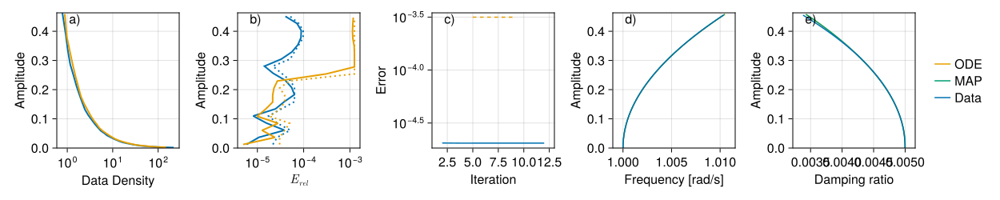
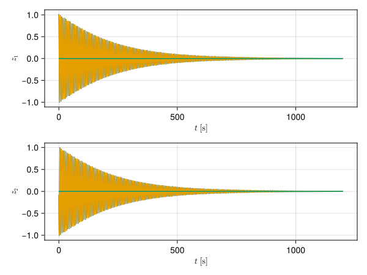

A simple autonomous system
Identifying the invariant foliations
This tutorial goes through the steps of
- How to produce training and test data from a differential equation
- How to process the data so that it is suitable for finding invariant foliations
- How to fit invariant foliations to data
- How to calculate invariant manifolds from differential equations and discrete-time maps
- How to extract invariant manifolds from the identified invariant foliations
- How to assess the quality of obtained mathematical model
The differential equations is
\[\dot{\boldsymbol{x}} = \boldsymbol{T}^{-1} \boldsymbol{f}(\boldsymbol{T} \boldsymbol{x}),\]
where
\[\boldsymbol{f}(\boldsymbol{x}) = \begin{pmatrix} -\alpha x_1+\left(x_1^2+x_2^2\right) \left(\beta x_1+\delta x_2\right)+x_2 \\ -\alpha x_2+\left(x_1^2+x_2^2\right) \left(\beta x_2-\delta x_1\right)-x_1 \\ -2 \alpha x_3 \end{pmatrix}.\]
The equation is selected to be nonlinear, but easy to investigate, so that the automatic test code runs quickly on slow hardware. Challenging problems can be found in the Examples folder.
Importing packages
using LinearAlgebra
using Tullio
using JLSO
using Random
using StaticArrays
using InvariantModels
using CairoMakieCreating data by solving a differential equation
Setting up the differential equations.
ODE_Transformation = SMatrix{3,3}(0.180047, 0.914719, -0.361763, 0.337552, -0.402896, -0.850725, -0.923927, 0.0310566, -0.381306)
function Tutorial_VF!(dx, x, u, Parameters)
Alpha = Parameters.Alpha
Beta = Parameters.Beta
Delta = Parameters.Delta
z = ODE_Transformation * x
dz = SVector(
-Alpha*z[1] + z[2] + (Beta*z[1] + Delta*z[2])*(z[1]^2 + z[2]^2),
-z[1] - Alpha*z[2] + (-Delta*z[1] + Beta*z[2])*(z[1]^2 + z[2]^2),
-2*Alpha*z[3],
)
dx .= transpose(ODE_Transformation) * dz
return dx
end
# no forcing
function Tutorial_Forcing!(u, Alpha, Parameters)
return u
end
function Tutorial_Forcing_Matrix!(x, Parameters, t)
return Rigid_Rotation_Matrix!(x, [0], 0, t)
endTutorial_Forcing_Matrix! (generic function with 1 method)Setting up parameters, time steps, etc
Name = "Tutorial"
Skew_Dimension = 1
Training_Trajectories = 1
Testing_Trajectories = 1
Trajectory_Length = 2400
Forcing_Grid = Fourier_Grid(Skew_Dimension)
Parameters = (Alpha = 0.005, Beta = 0.005, Delta = 0.1)
Time_Step = 0.5
IC_x_Train = [0; 0.8; 0.1;;]
IC_x_Test = [0.6; 0.1; 0;;]
IC_Alpha_Train = ones(Skew_Dimension, Training_Trajectories)
IC_Alpha_Test = ones(Skew_Dimension, Testing_Trajectories)
IC_Force = []Generating training and testing data. Documentation is at Generate_From_ODE.
List_of_Data, List_of_Phases = Generate_From_ODE(
Tutorial_VF!,
Tutorial_Forcing!,
Tutorial_Forcing_Matrix!,
Parameters,
Time_Step,
IC_x_Train,
IC_Force,
IC_Alpha_Train,
ones(Int, Training_Trajectories) * Trajectory_Length,
)
List_of_Data_T, List_of_Phases_T = Generate_From_ODE(
Tutorial_VF!,
Tutorial_Forcing!,
Tutorial_Forcing_Matrix!,
Parameters,
Time_Step,
IC_x_Test,
IC_Force,
IC_Alpha_Test,
ones(Int, Testing_Trajectories) * Trajectory_Length,
)Processing the data
Chopping up the trajectories into 600 point long segments. There is a balance between short and long trajectory segments. Longer segments increase accuracy, but tracking error over longer periods can make the calculation unstable. Documentation is at Chop_And_Stitch.
Index_List, Data, Encoded_Phase =
Chop_And_Stitch(List_of_Data, List_of_Phases; maxlen = 600)
Index_List_T, Data_T, Encoded_Phase_T =
Chop_And_Stitch(List_of_Data_T, List_of_Phases_T; maxlen = 600)(chunk_size, size(traj, 2), maxlen) = (479, 2400, 600)
(length(S_range), S_range, size(traj, 2)) = (6, 1:479:2396, 2400)
(chunk_size, size(traj, 2), maxlen) = (479, 2400, 600)
(length(S_range), S_range, size(traj, 2)) = (6, 1:479:2396, 2400)A linear model is identified from the data. This model contains the steady state, the linear dynamics about the steady state, and the forcing dynamics SH. Documentation is at Estimate_Linear_Model.
Scaling = ones(size(Data, 2)) # 1 ./ ((2^-12) .+ sqrt.(sum(Data .^ 2, dims = 1)))
Steady_State, Linear_Model, SH = Estimate_Linear_Model(
Index_List,
Data,
Encoded_Phase,
Scaling;
Iterations = 0,
Order = 1,
)(Admissible, Tensor_Admissible, Tensor_Linear_Indices, Tensor_Constant_Indices) = (1:4, 1:4, 2:4, 1:1)
0.000081 seconds
1.822503 seconds (2.36 M allocations: 113.325 MiB, 3.05% gc time, 99.94% compilation time)If the model is forced it can be a good idea to filter the linear model so that it does not contain the high frequency content of the noise. The foloowing line has no effect for autonomous systems, only included for completeness. Documentation is at Filter_Linear_Model.
# filtering up to 2 harmonics
Linear_Model_Filtered = Filter_Linear_Model(Linear_Model, Forcing_Grid, 1)norm(BB - BB_Filtered) = 0.0Calculating the invariant vector bundles of the linear model, using the eigenvalues and eigenvectors of the transfer operator, see Create_Linear_Decomposition. This creates tranformations that will bring the data into a coordinate system where the linear model is approximately block diagonal.
Decomp = Create_Linear_Decomposition(
Linear_Model_Filtered,
SH;
Time_Step = Time_Step,
Reduce = true,
Align = true,
By_Eigen = true,
) - complex cluster 1 1 -0.0006300282770120901 - 0.1360581850127915im | 1 2 -0.0006300282770120901 + 0.1360581850127915im
- real cluster => true 1 3 -0.0013513510261968429 + 0.0im
(length(cl_cplx_p), length(cl_cplx_n)) = (1, 1)
All eigenvalues matched.
Trimmed eigenvalues
Eigenvalue 1 = -0.0007420136478486661 - 0.16024206192744075im [Hz] ==>> -0.004662209249889466 - 1.006830569094657im [rad/s] tv = 0.0
Eigenvalue 2 = -0.0007420136478486661 + 0.16024206192744075im [Hz] ==>> -0.004662209249889466 + 1.006830569094657im [rad/s] tv = 0.0
Eigenvalue 3 = -0.0015915490479693436 + 0.0im [Hz] ==>> -0.009999997593856638 + 0.0im [rad/s] tv = 0.0
norm(Lambda_P .- mean(Lambda_P, dims = 2)) = 0.0
norm(Lambda_P .- reshape(Lambda_R, size(Lambda_R, 1), 1, :)) = 1.451407170439402e-15
Bundle_Decomposition_By_Eigenvectors diagnostics:
norm(Reduced_Model .- reshape(Lambda_R, size(Lambda_R, 1), 1, :)) = 2.2079359866516123e-5
norm(Reduced_Model .- mean(Reduced_Model, dims = 2)) = 0.0
norm(Unreduced_Model .- mean(Unreduced_Model, dims = 2)) = 0.0
Linear_Decompose: Eigenvalues
[1-2]: Frequency 1.0068305690946573 [rad/s]; 0.16024206192744078 [Hz]; Damping 0.004630579754923724
[3]: Decay rate 0.9950124803897535Decomposing the data into the coordinate system of the invariant vector bundles. Documentation is at Decompose_Data.
Data_Decomp, _ =
Decompose_Data(Index_List, Data, Encoded_Phase, Steady_State, SH, Decomp.Data_Encoder)
Data_Decomp_T, _ =
Decompose_Data(Index_List_T, Data_T, Encoded_Phase_T, Steady_State, SH, Decomp.Data_Encoder)Creating a scaling operation that makes sure that all data points are withing the unit ball of the phase space and that the signal amplitudes for each vector bundle are balanced. Documentation is at Decomposed_Data_Scaling.
Data_Scale = Decomposed_Data_Scaling(Data_Decomp, Decomp.Bundles)
Data_Decomp .*= Data_Scale
Data_Decomp_T .*= Data_ScaleSaving the data, so that it can be used later on, when evaluating the accuracy of the identified invariant foliations.
JLSO.save(
"DATA-$(Name).bson",
:Parameters => Parameters,
:Time_Step => Time_Step,
:Index_List => Index_List,
:Data_Decomp => Data_Decomp,
:Encoded_Phase => Encoded_Phase,
:Index_List_T => Index_List_T,
:Data_Decomp_T => Data_Decomp_T,
:Encoded_Phase_T => Encoded_Phase_T,
:Decomp => Decomp,
:Steady_State => Steady_State,
:Linear_Model => Linear_Model_Filtered,
:SH => SH,
:Data_Scale => Data_Scale,
)Fitting the data to a set of invariant foliations
Setting up the data structures of the invariant foliation. Here we select to hyper-parameters of the functional representations of the encoders and conjugate maps. We also select how the error should be scaled within the loss function as a function of signal amplitude. Documentation is at Multi_Foliation_Problem.
MTFP = Multi_Foliation_Problem(
Index_List,
Data_Decomp,
Encoded_Phase,
Selection = ([1; 2], [3;]),
Model_Orders = (3, 1),
Encoder_Orders = (1, 1),
Unreduced_Model = Decomp.Unreduced_Model,
Reduced_Model = Decomp.Reduced_Model,
Reduced_Encoder = Decomp.Reduced_Encoder,
SH = SH,
Initial_Iterations = 32,
Scaling_Parameter = 2^(-2),
Initial_Scaling_Parameter = 2^(-2),
Scaling_Order = Linear_Scaling,
node_ratio = 0.8,
leaf_ratio = 1.0,
max_rank = 24,
Linear_Type = (Encoder_Array_Stiefel, Encoder_Array_Stiefel),
Nonlinear_Type = (Encoder_Dense_Latent_Linear, Encoder_Dense_Latent_Linear),
Name = "MTF-$(Name)",
Time_Step = Time_Step,
)(Admissible, Tensor_Admissible, Tensor_Linear_Indices, Tensor_Constant_Indices) = (2:10, 2:10, 1:2, Any[])
Dense_Polynomial: Restricting monomials.
(Admissible, Tensor_Admissible, Tensor_Linear_Indices, Tensor_Constant_Indices) = (2:2, 2:2, 1:1, Any[])
Dense_Polynomial: Restricting monomials.
Multi_Foliation : zero()
Setting up model 1.
(size(((XTF.x[k]).x[2]).x[2]), size(view(Reduced_Encoder, Selection[k], :, :))) = ((3, 2, 1), (2, 1, 3))
Setting up model 2.
(size(((XTF.x[k]).x[2]).x[2]), size(view(Reduced_Encoder, Selection[k], :, :))) = ((3, 1, 1), (1, 1, 3))
Find_Torus: residual = 0.0 resolved = [3] of 3 with rtol = 0.0625 vs 1.0
(maximum(Scaling), minimum(Scaling)) = (7.9999929684215685, 1.0220770745414887)
0.000173 seconds
(size(BB), size(X.WW)) = ((2, 1, 9), (2, 1, 9))
mx = maximum(abs.(ev)) = 0.9975054150025571
size(BB_Jac) = (2, 2, 1, 9, 2)
Optimising Model!
-> Step=0 | Model=1 | -> 1. time = 3.7[s] F(x) = 1.90609e+01 G(x) = 2.39697e+04 R = 5.00000e-01
-> Step=0 | Model=1 | -> 2. time = 4.5[s] F(x) = 3.33399e+00 G(x) = 1.05636e+04 R = 2.50000e-01
-> Step=0 | Model=1 | -> 3. time = 5.2[s] F(x) = 7.39256e-01 G(x) = 4.70992e+03 R = 1.25000e-01
-> Step=0 | Model=1 | -> 4. time = 6.0[s] F(x) = 9.59554e-02 G(x) = 4.19500e+03 R = 6.25000e-02
-> Step=0 | Model=1 | -> 5. time = 6.7[s] F(x) = 3.83554e-02 G(x) = 6.08946e+01 R = 3.12500e-02
-> Step=0 | Model=1 | -> 6. time = 7.5[s] F(x) = 1.13083e-02 G(x) = 7.09928e+01 R = 1.56250e-02
-> Step=0 | Model=1 | -> 7. time = 8.2[s] F(x) = 4.41318e-03 G(x) = 1.69865e+02 R = 7.81250e-03
-> Step=0 | Model=1 | -> 8. time = 8.9[s] F(x) = 3.57266e-04 G(x) = 2.69537e+02 R = 3.90625e-03
-> Step=0 | Model=1 | -> 9. time = 9.7[s] F(x) = 5.10780e-05 G(x) = 7.23720e+01 R = 1.95312e-03
-> Step=0 | Model=1 | -> 10. time = 10.4[s] F(x) = 4.27316e-05 G(x) = 1.04861e+01 R = 9.76562e-04
-> Step=0 | Model=1 | -> 11. time = 11.2[s] F(x) = 4.22080e-05 G(x) = 6.88567e-01 R = 6.90534e-04
-> Step=0 | Model=1 | -> 12. time = 11.9[s] F(x) = 4.15731e-05 G(x) = 1.62321e-02 R = 4.88281e-04
-> Step=0 | Model=1 | -> 13. time = 12.7[s] F(x) = 4.06968e-05 G(x) = 9.10525e-03 R = 3.45267e-04
-> Step=0 | Model=1 | -> 14. time = 13.4[s] F(x) = 3.94983e-05 G(x) = 1.16430e-02 R = 2.44141e-04
-> Step=0 | Model=1 | -> 15. time = 14.2[s] F(x) = 3.78803e-05 G(x) = 1.79666e-02 R = 1.72633e-04
-> Step=0 | Model=1 | -> 16. time = 14.9[s] F(x) = 3.57343e-05 G(x) = 3.11161e-02 R = 1.22070e-04
-> Step=0 | Model=1 | -> 17. time = 15.6[s] F(x) = 3.29559e-05 G(x) = 5.57454e-02 R = 8.63167e-05
-> Step=0 | Model=1 | -> 18. time = 16.4[s] F(x) = 2.94753e-05 G(x) = 9.89412e-02 R = 6.10352e-05
-> Step=0 | Model=1 | -> 19. time = 17.1[s] F(x) = 2.53037e-05 G(x) = 1.70097e-01 R = 3.05176e-05
-> Step=0 | Model=1 | -> 20. time = 17.9[s] F(x) = 1.90780e-05 G(x) = 2.78420e-01 R = 1.52588e-05
-> Step=0 | Model=1 | -> 21. time = 18.6[s] F(x) = 1.17062e-05 G(x) = 7.71692e-01 R = 7.62939e-06
-> Step=0 | Model=1 | -> 22. time = 19.4[s] F(x) = 5.57968e-06 G(x) = 1.63199e+00 R = 3.81470e-06
-> Step=0 | Model=1 | -> 23. time = 20.1[s] F(x) = 2.41556e-06 G(x) = 2.28571e+00 R = 1.90735e-06
-> Step=0 | Model=1 | -> 24. time = 20.9[s] F(x) = 1.56081e-06 G(x) = 1.77067e+00 R = 9.53674e-07
-> Step=0 | Model=1 | -> 25. time = 21.6[s] F(x) = 1.47243e-06 G(x) = 6.12561e-01 R = 6.74350e-07
-> Step=0 | Model=1 | -> 26. time = 22.4[s] F(x) = 1.46958e-06 G(x) = 7.79356e-02 R = 4.76837e-07
-> Step=0 | Model=1 | -> 27. time = 23.1[s] F(x) = 1.46953e-06 G(x) = 3.00478e-03 R = 3.37175e-07
-> Step=0 | Model=1 | -> 28. time = 23.9[s] F(x) = 1.46953e-06 G(x) = 6.68393e-05 R = 2.38419e-07
-> Step=0 | Model=1 | -> 29. time = 24.6[s] F(x) = 1.46953e-06 G(x) = 8.63859e-07 R = 1.68587e-07
-> Step=0 | Model=1 | -> 30. time = 25.3[s] F(x) = 1.46953e-06 G(x) = 8.61445e-09 R = 1.19209e-07
->->->->->->-> Step=0 | Model=1 | -> 31. time = 26.1[s] F(x) = 1.46953e-06 G(x) = 4.68222e-10 R = 6.74350e-07
->->->->->->->->->->->->->->->->->->->->->->->->->->->->->->->->->->->->->->->->->->->->->->->->->->->->->->->-> Step=0 | Model=1 | -> 32. time = 26.9[s] F(x) = 1.46953e-06 G(x) = 2.52996e-10 R = 9.05097e+01
0.000012 seconds
(size(BB), size(X.WW)) = ((1, 1, 1), (1, 1, 1))
mx = maximum(abs.(ev)) = 0.9950124803896986
size(BB_Jac) = (1, 1, 1, 1, 2)
Optimising Model!
-> Step=0 | Model=2 | -> 1. time = 1.2[s] F(x) = 2.23234e-20 G(x) = 8.94483e-08 R = 5.00000e-01
-> Step=0 | Model=2 | -> 2. time = 2.0[s] F(x) = 1.90327e-20 G(x) = 5.81663e-08 R = 2.50000e-01
-> Step=0 | Model=2 | -> 3. time = 2.7[s] F(x) = 1.74621e-20 G(x) = 3.38947e-08 R = 1.76777e-01
-> Step=0 | Model=2 | -> 4. time = 3.4[s] F(x) = 1.70381e-20 G(x) = 1.63455e-08 R = 1.25000e-01
-> Step=0 | Model=2 | -> 5. time = 4.2[s] F(x) = 1.69576e-20 G(x) = 6.74964e-09 R = 8.83883e-02
-> Step=0 | Model=2 | -> 6. time = 4.9[s] F(x) = 1.69478e-20 G(x) = 2.32041e-09 R = 6.25000e-02
-> Step=0 | Model=2 | -> 7. time = 5.7[s] F(x) = 1.69471e-20 G(x) = 6.91247e-10 R = 4.41942e-02
-> Step=0 | Model=2 | -> 8. time = 6.4[s] F(x) = 1.69470e-20 G(x) = 1.51188e-10 R = 3.12500e-02
->->->->-> Step=0 | Model=2 | -> 9. time = 7.2[s] F(x) = 1.69470e-20 G(x) = 3.82337e-11 R = 8.83883e-02
->->->->->->->->->->->->->->->->->->-> Step=0 | Model=2 | -> 10. time = 7.9[s] F(x) = 1.69470e-20 G(x) = 7.10917e-11 R = 3.20000e+01Setting up the data structures for the testing data. This is necessary, because MTFP includes estimates of initial conditions for latent trajectories, which are differentr for the testing data. The estimates of initial conditions for latent trajectories must be updated before calculating the testing error. Documentation is at Multi_Foliation_Test_Problem.
MTFP_Test = Multi_Foliation_Test_Problem(
MTFP,
Index_List_T,
Data_Decomp_T,
Encoded_Phase_T;
Initial_Scaling_Parameter = 2^(-2),
)Find_Torus: residual = 0.0 resolved = [3] of 3 with rtol = 0.0625 vs 1.0
(maximum(Scaling), minimum(Scaling)) = (7.999972165837309, 0.9531002080487756)
Optimising Initial Conditions!
M=0. 1. [1-480] Model IC -> 11. time = 3.3[s] F(x) = 7.59985e-04 G(x) = 5.30125e-10 R = 5.98665e+01
M=0. 2. [481-960] Model IC -> 9. time = 0.0[s] F(x) = 2.18447e-07 G(x) = 1.64293e-10 R = 5.41850e+03
M=0. 3. [961-1440] Model IC -> 6. time = 0.0[s] F(x) = 1.88633e-07 G(x) = 4.19428e-10 R = 3.06517e+04
M=0. 4. [1441-1920] Model IC -> 8. time = 0.0[s] F(x) = 5.85565e-08 G(x) = 1.16884e-12 R = 3.38656e+02
M=0. 5. [1921-2400] Model IC -> 9. time = 0.0[s] F(x) = 4.24112e-08 G(x) = 1.86577e-14 R = 6.77312e+02
Optimising Initial Conditions!
M=0. 1. [1-480] Model IC -> 32. time = 0.9[s] F(x) = 8.63498e-20 G(x) = 1.39267e-14 R = 2.44949e+00
M=0. 2. [481-960] Model IC -> 4. time = 0.0[s] F(x) = 8.19937e-21 G(x) = 1.38196e-13 R = 1.56767e+02
M=0. 3. [961-1440] Model IC -> 32. time = 0.1[s] F(x) = 3.18023e-21 G(x) = 1.82229e-16 R = 1.08253e-01
M=0. 4. [1441-1920] Model IC -> 32. time = 0.1[s] F(x) = 1.38914e-21 G(x) = 7.80854e-17 R = 4.89898e+00
M=0. 5. [1921-2400] Model IC -> 6. time = 0.0[s] F(x) = 1.19971e-21 G(x) = 2.42107e-16 R = 1.56767e+02Finally, we are fitting the invariant foliations to data. Documentation is at Optimise!.
Optimise!(
MTFP,
MTFP_Test;
Model_Iterations = 16,
Encoder_Iterations = 8,
Steps = 12,
Gradient_Ratio = 2^(-7),
Gradient_Stop = 2^(-29),
)Multi_Foliation : zero()
|g->-> Step=1 | Model=1 | -> 1. time = 0.8[s] F(x) = 1.46953e-06 G(x) = 4.12123e-10 R = 1.00000e+00
->->->->->->->->->->->->->->->->->->->->->->-> Step=1 | Model=1 | -> 2. time = 1.6[s] F(x) = 1.46953e-06 G(x) = 2.37275e-10 R = 1.44815e+03
|m=6.89404e-02|Updating Test Error (1,)
M=1. 1. [1-480] Model IC -> 4. time = 0.0[s] F(x) = 7.59985e-04 G(x) = 3.90862e-10 R = 8.19200e+03
M=1. 2. [481-960] Model IC -> 3. time = 0.0[s] F(x) = 2.18447e-07 G(x) = 8.83381e-11 R = 2.89631e+03
M=1. 3. [961-1440] Model IC -> 1. time = 0.0[s] F(x) = 1.88633e-07 G(x) = 4.19491e-10 R = 2.26274e+01
M=1. 4. [1441-1920] Model IC -> 3. time = 0.0[s] F(x) = 5.85565e-08 G(x) = 6.32938e-13 R = 1.81019e+02
M=1. 5. [1921-2400] Model IC -> 4. time = 0.0[s] F(x) = 4.24112e-08 G(x) = 6.00721e-15 R = 4.52548e+01
|g->->->->->->->->->->->-> Step=1 | Model=2 | -> 1. time = 0.8[s] F(x) = 1.69470e-20 G(x) = 7.10917e-11 R = 3.20000e+01
|m=6.19210e-09|Updating Test Error (1,)
M=2. 1. [1-480] Model IC -> 16. time = 0.0[s] F(x) = 8.63498e-20 G(x) = 1.39267e-14 R = 2.82843e+00
M=2. 2. [481-960] Model IC -> 1. time = 0.0[s] F(x) = 8.19937e-21 G(x) = 1.38196e-13 R = 1.81019e+02
M=2. 3. [961-1440] Model IC -> 16. time = 0.0[s] F(x) = 3.18023e-21 G(x) = 1.82229e-16 R = 1.25000e-01
M=2. 4. [1441-1920] Model IC -> 16. time = 0.0[s] F(x) = 1.38914e-21 G(x) = 7.80854e-17 R = 5.65685e+00
M=2. 5. [1921-2400] Model IC -> 1. time = 0.0[s] F(x) = 1.19971e-21 G(x) = 2.42107e-16 R = 1.28000e+02
Find_Torus: residual = 0.0 resolved = [3] of 3 with rtol = 0.0625 vs 1.0
Torus=0.0
(maximum(Scaling), minimum(Scaling)) = (7.9999929684215685, 1.0220770745414887)
Saving into file: MTF-Tutorial.bson
(maximum(Scaling), minimum(Scaling)) = (7.999972165837309, 0.9531002080487756)
GC live: 446.768 MiB
JIT: 12.792 MiB
Max. RSS: 2125.957 MiB
Step=2 | Foil=1 | O=(2, 1) -> 0. time = 3.5[s] F(x) = 1.46953e-06 G(x) = 6.89404e-02 R = 7.07107e-01
H[1] Step=2 | Foil=1 | O=(2, 1) -> 1. time = 4.9[s] F(x) = 1.31835e-06 G(x) = 6.89404e-02 R = 7.07107e-01
H[1] Step=2 | Foil=1 | O=(2, 1) -> 2. time = 5.7[s] F(x) = 1.31835e-06 G(x) = 7.14846e-15 R = 7.07107e-01
Index=1 ACCEPT (2, 1) Gain = 1.51177e-07 UPD = 1.31835e-06
|m=9.48422e-05| Step=2 | Foil=2 | O=(2, 1) -> 0. time = 1.9[s] F(x) = 1.69470e-20 G(x) = 6.19210e-09 R = 5.00000e-01
H[1] Step=2 | Foil=2 | O=(2, 1) -> 1. time = 3.1[s] F(x) = 1.57274e-20 G(x) = 6.19210e-09 R = 5.00000e-01
H[1] Step=2 | Foil=2 | O=(2, 1) -> 2. time = 3.9[s] F(x) = 1.57274e-20 G(x) = 3.62188e-15 R = 5.00000e-01
Index=2 ACCEPT (2, 1) Gain = 1.21959e-21 UPD = 1.57274e-20
|m=8.24417e-10|Find_Torus: residual = 0.0 resolved = [3] of 3 with rtol = 0.0625 vs 1.0
Torus=4.385722316544613e-6
(maximum(Scaling), minimum(Scaling)) = (7.999993010770878, 1.022076922892097)
Saving into file: MTF-Tutorial.bson
(maximum(Scaling), minimum(Scaling)) = (7.999972286948352, 0.9531000484123286)
GC live: 170.339 MiB
JIT: 13.911 MiB
Max. RSS: 2125.957 MiB
Step=3 | Foil=1 | O=(2, 2) -> 0. time = 3.1[s] F(x) = 1.31835e-06 G(x) = 1.44242e-03 R = 8.66025e-01
H[1] Step=3 | Foil=1 | O=(2, 2) -> 1. time = 7.9[s] F(x) = 1.30443e-06 G(x) = 1.44242e-03 R = 8.66025e-01
H[1]H[2]H[3] Step=3 | Foil=1 | O=(2, 2) -> 2. time = 8.7[s] F(x) = 1.30443e-06 G(x) = 2.39651e-07 R = 8.66025e-01
Index=1 ACCEPT (2, 2) Gain = 1.39204e-08 UPD = 1.30443e-06
|m=0.00000e+00| Step=3 | Foil=2 | O=(2, 2) -> 0. time = 1.6[s] F(x) = 1.57274e-20 G(x) = 8.24466e-10 R = 7.07107e-01
H[1]H[2] Step=3 | Foil=2 | O=(2, 2) -> 1. time = 4.4[s] F(x) = 1.28724e-20 G(x) = 8.24466e-10 R = 7.07107e-01
Index=2 ACCEPT (2, 2) Gain = 2.85496e-21 UPD = 1.28724e-20
|m=0.00000e+00|Find_Torus: residual = 1.3399663017004063e-21 resolved = [3] of 3 with rtol = 0.0625 vs 0.9999806988331597
Torus=4.385722317353829e-6
(maximum(Scaling), minimum(Scaling)) = (7.999993010770878, 1.022076922892108)
Saving into file: MTF-Tutorial.bson
(maximum(Scaling), minimum(Scaling)) = (7.999972286948352, 0.9531000484123172)
GC live: 170.690 MiB
JIT: 15.299 MiB
Max. RSS: 2125.957 MiB
Step=4 | Foil=1 | O=(2, 1) -> 0. time = 0.0[s] F(x) = 1.30443e-06 G(x) = 5.93702e-03 R = 7.07107e-01
H[1] Step=4 | Foil=1 | O=(2, 1) -> 1. time = 0.8[s] F(x) = 1.30331e-06 G(x) = 5.93702e-03 R = 7.07107e-01
H[1] Step=4 | Foil=1 | O=(2, 1) -> 2. time = 1.5[s] F(x) = 1.30331e-06 G(x) = 1.39694e-14 R = 7.07107e-01
Index=1 ACCEPT (2, 1) Gain = 1.12118e-09 UPD = 1.30331e-06
Step=4 | Foil=2 | O=(2, 1) -> 0. time = 0.0[s] F(x) = 1.28724e-20 G(x) = 8.90202e-13 R = 5.00000e-01
H[1] Step=4 | Foil=2 | O=(2, 1) -> 1. time = 0.8[s] F(x) = 1.28724e-20 G(x) = 8.90202e-13 R = 5.00000e-01
Index=2 ACCEPT (2, 1) Gain = 2.65044e-27 UPD = 1.28724e-20
Find_Torus: residual = 1.74681652857876e-21 resolved = [3] of 3 with rtol = 0.0625 vs 0.9999806988331597
Torus=4.763388782104074e-6
(maximum(Scaling), minimum(Scaling)) = (7.999993014384529, 1.0220769102275682)
Saving into file: MTF-Tutorial.bson
(maximum(Scaling), minimum(Scaling)) = (7.999972297363413, 0.9531000342619962)
GC live: 170.237 MiB
JIT: 15.299 MiB
Max. RSS: 2125.957 MiB
|g-> Step=5 | Model=1 | -> 1. time = 0.8[s] F(x) = 1.30328e-06 G(x) = 6.09897e-03 R = 7.07107e-01
-> Step=5 | Model=1 | -> 2. time = 1.6[s] F(x) = 1.30327e-06 G(x) = 2.40735e-03 R = 5.00000e-01
-> Step=5 | Model=1 | -> 3. time = 2.4[s] F(x) = 1.30326e-06 G(x) = 1.73946e-03 R = 3.53553e-01
-> Step=5 | Model=1 | -> 4. time = 3.2[s] F(x) = 1.30325e-06 G(x) = 1.21459e-03 R = 2.50000e-01
-> Step=5 | Model=1 | -> 5. time = 3.9[s] F(x) = 1.30325e-06 G(x) = 7.60291e-04 R = 1.76777e-01
-> Step=5 | Model=1 | -> 6. time = 4.7[s] F(x) = 1.30325e-06 G(x) = 4.23835e-04 R = 1.25000e-01
-> Step=5 | Model=1 | -> 7. time = 5.5[s] F(x) = 1.30325e-06 G(x) = 2.05029e-04 R = 8.83883e-02
-> Step=5 | Model=1 | -> 8. time = 6.3[s] F(x) = 1.30324e-06 G(x) = 8.00130e-05 R = 6.25000e-02
-> Step=5 | Model=1 | -> 9. time = 7.1[s] F(x) = 1.30324e-06 G(x) = 2.56450e-05 R = 4.41942e-02
-> Step=5 | Model=1 | -> 10. time = 7.9[s] F(x) = 1.30324e-06 G(x) = 2.39176e-05 R = 3.12500e-02
-> Step=5 | Model=1 | -> 11. time = 8.7[s] F(x) = 1.30324e-06 G(x) = 2.46827e-05 R = 2.20971e-02
-> Step=5 | Model=1 | -> 12. time = 9.4[s] F(x) = 1.30324e-06 G(x) = 1.95594e-05 R = 1.56250e-02
-> Step=5 | Model=1 | -> 13. time = 10.2[s] F(x) = 1.30324e-06 G(x) = 1.40825e-05 R = 1.10485e-02
-> Step=5 | Model=1 | -> 14. time = 11.0[s] F(x) = 1.30324e-06 G(x) = 1.12023e-05 R = 7.81250e-03
-> Step=5 | Model=1 | -> 15. time = 11.8[s] F(x) = 1.30324e-06 G(x) = 1.03191e-05 R = 5.52427e-03
-> Step=5 | Model=1 | -> 16. time = 12.6[s] F(x) = 1.30324e-06 G(x) = 1.00450e-05 R = 3.90625e-03
Model=1 | -> Frequency = 1.59155e-01[Hz], 1.00000e+00[rad/s] Damping = 4.99763e-03[Hz]
|m=1.16176e-04|Updating Test Error (1,)
M=1. 1. [1-480] Model IC -> 16. time = 0.0[s] F(x) = 7.59909e-04 G(x) = 1.20360e-09 R = 7.07107e-01
M=1. 2. [481-960] Model IC -> 9. time = 0.0[s] F(x) = 1.30224e-07 G(x) = 2.36924e-09 R = 1.81019e+02
M=1. 3. [961-1440] Model IC -> 8. time = 0.0[s] F(x) = 1.37439e-07 G(x) = 9.39117e-09 R = 7.24077e+02
M=1. 4. [1441-1920] Model IC -> 9. time = 0.0[s] F(x) = 1.63450e-08 G(x) = 4.36271e-10 R = 2.26274e+01
M=1. 5. [1921-2400] Model IC -> 11. time = 0.0[s] F(x) = 1.56575e-09 G(x) = 9.29635e-13 R = 1.02400e+03
|g-> Step=5 | Model=2 | -> 1. time = 0.8[s] F(x) = 1.22031e-20 G(x) = 2.40779e-08 R = 7.07107e-01
-> Step=5 | Model=2 | -> 2. time = 1.6[s] F(x) = 1.20333e-20 G(x) = 9.51036e-09 R = 5.00000e-01
-> Step=5 | Model=2 | -> 3. time = 2.3[s] F(x) = 1.20025e-20 G(x) = 3.45381e-09 R = 3.53553e-01
-> Step=5 | Model=2 | -> 4. time = 3.1[s] F(x) = 1.19984e-20 G(x) = 1.32572e-09 R = 2.50000e-01
-> Step=5 | Model=2 | -> 5. time = 3.9[s] F(x) = 1.19978e-20 G(x) = 5.14980e-10 R = 1.76777e-01
-> Step=5 | Model=2 | -> 6. time = 4.7[s] F(x) = 1.19977e-20 G(x) = 2.89033e-10 R = 1.25000e-01
-> Step=5 | Model=2 | -> 7. time = 5.5[s] F(x) = 1.19977e-20 G(x) = 1.54445e-11 R = 8.83883e-02
->->->->->->->->->->->->-> Step=5 | Model=2 | -> 8. time = 6.2[s] F(x) = 1.19977e-20 G(x) = 4.77053e-12 R = 4.00000e+00
->->->->->->->->-> Step=5 | Model=2 | -> 9. time = 7.0[s] F(x) = 1.19977e-20 G(x) = 2.93090e-12 R = 4.52548e+01
|m=1.29766e-14|Updating Test Error (1,)
M=2. 1. [1-480] Model IC -> 7. time = 0.0[s] F(x) = 1.15505e-19 G(x) = 1.92672e-13 R = 5.54256e+01
M=2. 2. [481-960] Model IC -> 8. time = 0.0[s] F(x) = 3.17949e-21 G(x) = 1.75299e-13 R = 2.21703e+02
M=2. 3. [961-1440] Model IC -> 9. time = 0.0[s] F(x) = 1.55516e-21 G(x) = 2.72768e-14 R = 1.56767e+02
M=2. 4. [1441-1920] Model IC -> 10. time = 0.0[s] F(x) = 7.16950e-22 G(x) = 1.17815e-15 R = 7.83837e+01
M=2. 5. [1921-2400] Model IC -> 10. time = 0.0[s] F(x) = 6.25924e-22 G(x) = 1.07060e-15 R = 6.27069e+02
Find_Torus: residual = 1.74681652857876e-21 resolved = [3] of 3 with rtol = 0.0625 vs 0.9999806988331597
Torus=4.763388782104074e-6
(maximum(Scaling), minimum(Scaling)) = (7.999993014384529, 1.0220769102275682)
Saving into file: MTF-Tutorial.bson
(maximum(Scaling), minimum(Scaling)) = (7.999972297363413, 0.9531000342619962)
GC live: 198.784 MiB
JIT: 15.381 MiB
Max. RSS: 2125.957 MiB
Step=6 | Foil=1 | O=(2, 2) -> 0. time = 0.0[s] F(x) = 1.30324e-06 G(x) = 3.48724e-05 R = 8.66025e-01
H[1]H[2] Step=6 | Foil=1 | O=(2, 2) -> 1. time = 0.8[s] F(x) = 1.30324e-06 G(x) = 3.48724e-05 R = 8.66025e-01
H[1]H[2]H[3] Step=6 | Foil=1 | O=(2, 2) -> 2. time = 1.5[s] F(x) = 1.30324e-06 G(x) = 6.41351e-10 R = 8.66025e-01
Index=1 ACCEPT (2, 2) Gain = 8.13637e-12 UPD = 1.30324e-06
|m=7.73737e-10| Step=6 | Foil=2 | O=(2, 2) -> 0. time = 0.0[s] F(x) = 1.19977e-20 G(x) = 1.34377e-12 R = 7.07107e-01
H[1]H[2] Step=6 | Foil=2 | O=(2, 2) -> 1. time = 0.8[s] F(x) = 1.19977e-20 G(x) = 1.34377e-12 R = 7.07107e-01
Index=2 ACCEPT (2, 2) Gain = 8.61890e-27 UPD = 1.19977e-20
|m=1.98180e-15|Find_Torus: residual = 4.64217613664222e-21 resolved = [3] of 3 with rtol = 0.0625 vs 0.9999802707824638
Torus=4.763388782143418e-6
(maximum(Scaling), minimum(Scaling)) = (7.999993014384529, 1.022076910227568)
Saving into file: MTF-Tutorial.bson
(maximum(Scaling), minimum(Scaling)) = (7.999972297363413, 0.9531000342619964)
GC live: 170.942 MiB
JIT: 15.381 MiB
Max. RSS: 2125.957 MiB
Step=7 | Foil=1 | O=(2, 1) -> 0. time = 0.0[s] F(x) = 1.30324e-06 G(x) = 4.98605e-04 R = 7.07107e-01
H[1] Step=7 | Foil=1 | O=(2, 1) -> 1. time = 0.8[s] F(x) = 1.30323e-06 G(x) = 4.98605e-04 R = 7.07107e-01
H[1] Step=7 | Foil=1 | O=(2, 1) -> 2. time = 1.5[s] F(x) = 1.30323e-06 G(x) = 6.81898e-15 R = 7.07107e-01
Index=1 ACCEPT (2, 1) Gain = 7.90770e-12 UPD = 1.30323e-06
|m=0.00000e+00||S|m=0.00000e+00||S|m=0.00000e+00||S|m=0.00000e+00||S|m=0.00000e+00||S Step=7 | Foil=2 | O=(2, 1) -> 0. time = 0.0[s] F(x) = 1.19977e-20 G(x) = 4.46135e-09 R = 5.00000e-01
H[1] Step=7 | Foil=2 | O=(2, 1) -> 1. time = 0.8[s] F(x) = 1.13646e-20 G(x) = 4.46135e-09 R = 5.00000e-01
H[1] Step=7 | Foil=2 | O=(2, 1) -> 2. time = 1.5[s] F(x) = 1.13646e-20 G(x) = 6.26655e-15 R = 5.00000e-01
Index=2 ACCEPT (2, 1) Gain = 6.33091e-22 UPD = 1.13646e-20
|m=0.00000e+00||S|m=0.00000e+00||S|m=0.00000e+00||S|m=0.00000e+00||S|m=0.00000e+00||SFind_Torus: residual = 5.064045005371491e-21 resolved = [3] of 3 with rtol = 0.0625 vs 0.9999802707824638
Torus=4.795107735572475e-6
(maximum(Scaling), minimum(Scaling)) = (7.99999301468899, 1.0220769091471558)
Saving into file: MTF-Tutorial.bson
(maximum(Scaling), minimum(Scaling)) = (7.99997229823792, 0.9531000330910065)
GC live: 171.468 MiB
JIT: 15.381 MiB
Max. RSS: 2125.957 MiB
Step=8 | Foil=1 | O=(2, 1) -> 0. time = 0.0[s] F(x) = 1.30323e-06 G(x) = 6.51143e-11 R = 7.07107e-01
H[1] Step=8 | Foil=1 | O=(2, 1) -> 1. time = 0.8[s] F(x) = 1.30323e-06 G(x) = 6.51143e-11 R = 7.07107e-01
Index=1 ACCEPT (2, 1) Gain = 6.98802e-21 UPD = 1.30323e-06
Step=8 | Foil=2 | O=(2, 1) -> 0. time = 0.0[s] F(x) = 1.13646e-20 G(x) = 1.94729e-16 R = 5.00000e-01
H[1] Step=8 | Foil=2 | O=(2, 1) -> 1. time = 0.8[s] F(x) = 1.13646e-20 G(x) = 1.94729e-16 R = 5.00000e-01
Index=2 ACCEPT (2, 1) Gain = 1.73580e-29 UPD = 1.13646e-20
Find_Torus: residual = 5.064044938358212e-21 resolved = [3] of 3 with rtol = 0.0625 vs 0.9999802707824638
Torus=4.795107732956903e-6
(maximum(Scaling), minimum(Scaling)) = (7.99999301468899, 1.0220769091471562)
Saving into file: MTF-Tutorial.bson
(maximum(Scaling), minimum(Scaling)) = (7.99997229823792, 0.9531000330910063)
GC live: 170.888 MiB
JIT: 15.381 MiB
Max. RSS: 2125.957 MiB
|g-> Step=9 | Model=1 | -> 1. time = 0.8[s] F(x) = 1.30322e-06 G(x) = 3.46835e-05 R = 2.76214e-03
-> Step=9 | Model=1 | -> 2. time = 1.6[s] F(x) = 1.30322e-06 G(x) = 1.00516e-05 R = 1.95312e-03
-> Step=9 | Model=1 | -> 3. time = 2.4[s] F(x) = 1.30322e-06 G(x) = 9.28441e-06 R = 1.38107e-03
-> Step=9 | Model=1 | -> 4. time = 3.2[s] F(x) = 1.30322e-06 G(x) = 8.70990e-06 R = 9.76562e-04
-> Step=9 | Model=1 | -> 5. time = 4.0[s] F(x) = 1.30322e-06 G(x) = 8.04903e-06 R = 6.90534e-04
-> Step=9 | Model=1 | -> 6. time = 4.8[s] F(x) = 1.30322e-06 G(x) = 7.24654e-06 R = 4.88281e-04
-> Step=9 | Model=1 | -> 7. time = 5.6[s] F(x) = 1.30322e-06 G(x) = 6.34211e-06 R = 3.45267e-04
-> Step=9 | Model=1 | -> 8. time = 6.4[s] F(x) = 1.30322e-06 G(x) = 5.45365e-06 R = 2.44141e-04
-> Step=9 | Model=1 | -> 9. time = 7.2[s] F(x) = 1.30322e-06 G(x) = 4.78709e-06 R = 1.72633e-04
-> Step=9 | Model=1 | -> 10. time = 8.0[s] F(x) = 1.30322e-06 G(x) = 4.52675e-06 R = 1.22070e-04
-> Step=9 | Model=1 | -> 11. time = 8.8[s] F(x) = 1.30322e-06 G(x) = 4.60263e-06 R = 8.63167e-05
-> Step=9 | Model=1 | -> 12. time = 9.6[s] F(x) = 1.30322e-06 G(x) = 4.70232e-06 R = 6.10352e-05
-> Step=9 | Model=1 | -> 13. time = 10.4[s] F(x) = 1.30322e-06 G(x) = 4.55646e-06 R = 4.31584e-05
-> Step=9 | Model=1 | -> 14. time = 11.2[s] F(x) = 1.30322e-06 G(x) = 4.08695e-06 R = 3.05176e-05
-> Step=9 | Model=1 | -> 15. time = 12.0[s] F(x) = 1.30322e-06 G(x) = 3.36836e-06 R = 2.15792e-05
-> Step=9 | Model=1 | -> 16. time = 12.7[s] F(x) = 1.30322e-06 G(x) = 2.53640e-06 R = 1.52588e-05
Model=1 | -> Frequency = 1.59155e-01[Hz], 1.00000e+00[rad/s] Damping = 4.99763e-03[Hz]
|m=9.75673e-06|Updating Test Error (1,)
M=1. 1. [1-480] Model IC -> 16. time = 0.0[s] F(x) = 7.59904e-04 G(x) = 6.22369e-10 R = 2.00000e+00
M=1. 2. [481-960] Model IC -> 16. time = 0.0[s] F(x) = 1.29522e-07 G(x) = 3.36662e-13 R = 1.13137e+01
M=1. 3. [961-1440] Model IC -> 7. time = 0.0[s] F(x) = 1.37371e-07 G(x) = 3.64732e-09 R = 6.55360e+04
M=1. 4. [1441-1920] Model IC -> 8. time = 0.0[s] F(x) = 1.63552e-08 G(x) = 1.33803e-09 R = 1.28000e+02
M=1. 5. [1921-2400] Model IC -> 7. time = 0.0[s] F(x) = 1.58575e-09 G(x) = 1.11386e-09 R = 2.89631e+03
|g-> Step=9 | Model=2 | -> 1. time = 0.8[s] F(x) = 1.10145e-20 G(x) = 1.70270e-08 R = 7.07107e-01
-> Step=9 | Model=2 | -> 2. time = 1.6[s] F(x) = 1.09252e-20 G(x) = 6.77243e-09 R = 5.00000e-01
-> Step=9 | Model=2 | -> 3. time = 2.4[s] F(x) = 1.09088e-20 G(x) = 2.56645e-09 R = 3.53553e-01
-> Step=9 | Model=2 | -> 4. time = 3.2[s] F(x) = 1.09065e-20 G(x) = 1.07627e-09 R = 2.50000e-01
-> Step=9 | Model=2 | -> 5. time = 4.0[s] F(x) = 1.09062e-20 G(x) = 5.48537e-10 R = 1.76777e-01
-> Step=9 | Model=2 | -> 6. time = 4.8[s] F(x) = 1.09062e-20 G(x) = 1.56014e-10 R = 1.25000e-01
-> Step=9 | Model=2 | -> 7. time = 5.5[s] F(x) = 1.09061e-20 G(x) = 5.18928e-11 R = 8.83883e-02
->->->->->->->->->->->->->-> Step=9 | Model=2 | -> 8. time = 6.3[s] F(x) = 1.09061e-20 G(x) = 1.17709e-11 R = 5.65685e+00
->->->->->->->-> Step=9 | Model=2 | -> 9. time = 7.1[s] F(x) = 1.09061e-20 G(x) = 5.54769e-12 R = 4.52548e+01
|m=6.62767e-13|Updating Test Error (1,)
M=2. 1. [1-480] Model IC -> 5. time = 0.0[s] F(x) = 1.15430e-19 G(x) = 7.52813e-13 R = 1.81019e+02
M=2. 2. [481-960] Model IC -> 8. time = 0.0[s] F(x) = 2.99415e-21 G(x) = 3.08364e-14 R = 4.52548e+01
M=2. 3. [961-1440] Model IC -> 7. time = 0.0[s] F(x) = 1.26655e-21 G(x) = 2.13533e-13 R = 3.62039e+02
M=2. 4. [1441-1920] Model IC -> 9. time = 0.0[s] F(x) = 4.22359e-22 G(x) = 1.60540e-14 R = 1.44815e+03
M=2. 5. [1921-2400] Model IC -> 16. time = 0.0[s] F(x) = 3.31787e-22 G(x) = 1.82208e-19 R = 2.76214e-03
Find_Torus: residual = 5.064044938358212e-21 resolved = [3] of 3 with rtol = 0.0625 vs 0.9999802707824638
Torus=4.795107732956903e-6
(maximum(Scaling), minimum(Scaling)) = (7.99999301468899, 1.0220769091471562)
Saving into file: MTF-Tutorial.bson
(maximum(Scaling), minimum(Scaling)) = (7.99997229823792, 0.9531000330910063)
GC live: 198.586 MiB
JIT: 15.381 MiB
Max. RSS: 2125.957 MiB
Step=10 | Foil=1 | O=(2, 2) -> 0. time = 0.0[s] F(x) = 1.30322e-06 G(x) = 3.44472e-05 R = 8.66025e-01
H[1]H[2] Step=10 | Foil=1 | O=(2, 2) -> 1. time = 0.8[s] F(x) = 1.30321e-06 G(x) = 3.44472e-05 R = 8.66025e-01
H[1]H[2]H[3] Step=10 | Foil=1 | O=(2, 2) -> 2. time = 1.6[s] F(x) = 1.30321e-06 G(x) = 6.39731e-10 R = 8.66025e-01
Index=1 ACCEPT (2, 2) Gain = 7.93917e-12 UPD = 1.30321e-06
|m=4.50460e-15| Step=10 | Foil=2 | O=(2, 2) -> 0. time = 0.0[s] F(x) = 1.09061e-20 G(x) = 1.33899e-12 R = 7.07107e-01
H[1]H[2] Step=10 | Foil=2 | O=(2, 2) -> 1. time = 0.8[s] F(x) = 1.09061e-20 G(x) = 1.33899e-12 R = 7.07107e-01
Index=2 ACCEPT (2, 2) Gain = 5.18928e-27 UPD = 1.09061e-20
|m=7.15597e-17|Find_Torus: residual = 2.0637153947548716e-21 resolved = [3] of 3 with rtol = 0.0625 vs 0.9999798469213538
Torus=4.795107732996692e-6
(maximum(Scaling), minimum(Scaling)) = (7.99999301468899, 1.0220769091471558)
Saving into file: MTF-Tutorial.bson
(maximum(Scaling), minimum(Scaling)) = (7.99997229823792, 0.9531000330910068)
GC live: 170.954 MiB
JIT: 15.381 MiB
Max. RSS: 2125.957 MiB
Step=11 | Foil=1 | O=(2, 1) -> 0. time = 0.0[s] F(x) = 1.30321e-06 G(x) = 3.74967e-05 R = 7.07107e-01
H[1] Step=11 | Foil=1 | O=(2, 1) -> 1. time = 0.8[s] F(x) = 1.30321e-06 G(x) = 3.74967e-05 R = 7.07107e-01
H[1] Step=11 | Foil=1 | O=(2, 1) -> 2. time = 1.6[s] F(x) = 1.30321e-06 G(x) = 1.49345e-14 R = 7.07107e-01
Index=1 ACCEPT (2, 1) Gain = 4.47222e-14 UPD = 1.30321e-06
|m=0.00000e+00||S|m=0.00000e+00||S|m=0.00000e+00||S|m=0.00000e+00||S|m=0.00000e+00||S Step=11 | Foil=2 | O=(2, 1) -> 0. time = 0.0[s] F(x) = 1.09061e-20 G(x) = 3.23070e-09 R = 5.00000e-01
H[1] Step=11 | Foil=2 | O=(2, 1) -> 1. time = 0.8[s] F(x) = 1.05741e-20 G(x) = 3.23070e-09 R = 5.00000e-01
H[1] Step=11 | Foil=2 | O=(2, 1) -> 2. time = 1.6[s] F(x) = 1.05741e-20 G(x) = 9.21258e-15 R = 5.00000e-01
Index=2 ACCEPT (2, 1) Gain = 3.31997e-22 UPD = 1.05741e-20
|m=0.00000e+00||S|m=0.00000e+00||S|m=0.00000e+00||S|m=0.00000e+00||S|m=0.00000e+00||SFind_Torus: residual = 2.020753065453727e-21 resolved = [3] of 3 with rtol = 0.0625 vs 0.9999798469213538
Torus=4.797489384774201e-6
(maximum(Scaling), minimum(Scaling)) = (7.99999301471263, 1.0220769090533501)
Saving into file: MTF-Tutorial.bson
(maximum(Scaling), minimum(Scaling)) = (7.999972298303511, 0.9531000330162439)
GC live: 171.407 MiB
JIT: 15.381 MiB
Max. RSS: 2125.957 MiB
Step=12 | Foil=1 | O=(2, 1) -> 0. time = 0.0[s] F(x) = 1.30321e-06 G(x) = 5.00683e-12 R = 7.07107e-01
H[1] Step=12 | Foil=1 | O=(2, 1) -> 1. time = 0.8[s] F(x) = 1.30321e-06 G(x) = 5.00683e-12 R = 7.07107e-01
Index=1 REJECT (2, 1) Margin = -1.31290e-20 UPD = 1.30321e-06
Step=12 | Foil=2 | O=(2, 1) -> 0. time = 0.0[s] F(x) = 1.05741e-20 G(x) = 7.56745e-16 R = 5.00000e-01
H[1] Step=12 | Foil=2 | O=(2, 1) -> 1. time = 0.8[s] F(x) = 1.05741e-20 G(x) = 7.56745e-16 R = 5.00000e-01
Index=2 ACCEPT (2, 1) Gain = 1.35683e-29 UPD = 1.05741e-20
Find_Torus: residual = 2.020753065453727e-21 resolved = [3] of 3 with rtol = 0.0625 vs 0.9999798469213538
Torus=4.797489384774201e-6
(maximum(Scaling), minimum(Scaling)) = (7.99999301471263, 1.0220769090533501)
Saving into file: MTF-Tutorial.bson
(maximum(Scaling), minimum(Scaling)) = (7.999972298303511, 0.9531000330162439)
GC live: 170.701 MiB
JIT: 15.381 MiB
Max. RSS: 2125.957 MiBAnalysing the the calculated invariant foliations
Setting the index of the vector bundle for which the results are analysed
Index = 11Loading the data. Here it is not strictly necessary, because these are already in memory. However, if a separate script is use to analyse the results, data and the results must be loaded.
data = JLSO.load("DATA-$(Name).bson")
Parameters = data[:Parameters]
Time_Step = data[:Time_Step]
Index_List = data[:Index_List]
Data_Decomp = data[:Data_Decomp]
Encoded_Phase = data[:Encoded_Phase]
Index_List_T = data[:Index_List_T]
Data_Decomp_T = data[:Data_Decomp_T]
Encoded_Phase_T = data[:Encoded_Phase_T]
Decomp = data[:Decomp]
Steady_State = data[:Steady_State]
Linear_Model = data[:Linear_Model]
SH = data[:SH]
Data_Scale = data[:Data_Scale]
#
Data_Encoder = Decomp.Data_Encoder
Data_Decoder = Decomp.Data_Decoder
State_Dimension = size(Data_Decomp, 1)
Skew_Dimension = size(Encoded_Phase, 1)
IC_Force = []Loading the identified invariant foliations.
dd = JLSO.load("MTF-$(Name).bson")
MTF = dd[:MTF]
XTF = dd[:XTF]
MTF_Test = dd[:Test_MTF]
XTF_Test = dd[:Test_XTF]
Error_Trace = dd[:Train_Error_Trace]
Test_Trace = dd[:Test_Error_Trace]Creating a figure for plotting the results
fig = Create_Plot()Calculating the invariant manifold from the differential equation
Creating a polynomial vector field to be analysed subsequently. Documentation is at Model_From_Function_Alpha.
MM, MX, MD = Model_From_Function_Alpha(
Tutorial_VF!,
Tutorial_Forcing!,
p -> Rigid_Rotation_Generator([0], 0.0),
IC_Force,
Parameters;
State_Dimension = State_Dimension,
Start_Order = 0,
End_Order = 3,
)(Admissible, Tensor_Admissible, Tensor_Linear_Indices, Tensor_Constant_Indices) = (1:20, 1:20, 2:4, 1:1)Setting the parameters of the invariant manifold representation. We use piecewise cubic polynomials in the radia direction and 11 Fourier collocation points in the angular direction. The maximum amplutude to calculate is Radius.
Radius = 1.0
Radial_Order = 2
Radial_Intervals = 96
Polar_Order = 1111Calculating the invariant manifold from the vector field. Documentation is at Find_ODE_Manifold.
MP, XP = Find_ODE_Manifold(
MM, MX, MD,
[1;2];
Radial_Order = Radial_Order,
Radial_Intervals = Radial_Intervals,
Radius = Radius,
Phase_Dimension = Polar_Order,
abstol = 1e-9,
reltol = 1e-9,
maxiters = 32,
initial_maxiters = 200,
)(InvariantModels.Polar_ODE_Manifold{3, 3, 2, 97, 11, 1}([0.0, 0.010416666666666666, 0.020833333333333332, 0.03125, 0.041666666666666664, 0.052083333333333336, 0.0625, 0.07291666666666667, 0.08333333333333333, 0.09375 … 0.90625, 0.9166666666666666, 0.9270833333333334, 0.9375, 0.9479166666666666, 0.9583333333333334, 0.96875, 0.9791666666666666, 0.9895833333333334, 1.0], MultiStep_Model{3, 1, 0, 3, 1}(Euclidean(63; field=ℝ), [0.0;;], [0 1 … 0 0; 0 0 … 1 0; 0 0 … 2 3], 1:20, 1:20, 1:1, 1:1, 2:4, 2:4, [2 3 4; 5 6 7; … ; 15 18 19; 16 19 20], [1 1 1; 2 2 2; … ; 9 9 9; 10 10 10], [1 1 1; 2 1 1; … ; 1 2 2; 1 1 3], 0, 0, 0), (WW = [0.0; 0.0; 0.0;;; -0.005654363537539987; 0.37976664272464994; -0.851414942085612;;; -0.38284424527535005; -0.00861866295384999; 0.360141339613388;;; … ;;; 0.04904851080121218; -0.011338563724952443; -0.021237430025291517;;; -0.08864685372687231; 0.025702944747171597; 0.026758161300750483;;; 0.07211402467105012; -0.032302603004342005; 0.0036517537751160284], IC = [0.0; 0.0; 0.0;;]), [0;;], [0.0; 0.0; 0.0;;; 0.0; 0.0; 0.0;;; 0.0; 0.0; 0.0;;; … ;;; 0.0; 0.0; 0.0;;; 0.0; 0.0; 0.0;;; 0.0; 0.0; 0.0], -0.0, 0.9999999622111075), (WW = [0.0 0.00686681693386326 … 0.6523476029948845 0.6592144196751732; 0.0 -0.0024315650659915275 … -0.2309986940670801 -0.23343025970923628; 0.0 -0.0010898571907180209 … -0.1035364428561725 -0.10462630042827134;;;; 0.0 0.005776733992396993 … 0.5487897191729746 0.5545664527764184; 0.0 -0.00041681459084628097 … -0.039597395421463316 -0.040014210479986434; 0.0 -0.004550723243801621 … -0.4323187217584706 -0.4368694455032688;;;; 0.0 0.0028525788248011785 … 0.27099497879258316 0.27384755724477333; 0.0 0.0017302715718156296 … 0.164375787127185 0.1661060581418133; 0.0 -0.00656676682084331 … -0.6238428559098276 -0.6304096230567054;;;; … ;;;; 0.0 -0.0009772499184829383 … -0.0928387492613472 -0.09381599947260107; 0.0 -0.0026359131577062237 … -0.2504117638888698 -0.2530476776569591; 0.0 0.006808114030505047 … 0.6467708264538785 0.6535789402043567;;;; 0.0 0.0028525788669092186 … 0.2709949782319593 0.27384755658587323; 0.0 -0.003750488838819949 … -0.35629645224738205 -0.36004694165480877; 0.0 0.005661280742745234 … 0.5378216681411311 0.5434829487280932;;;; 0.0 0.0057767340174276075 … 0.5487897217550761 0.5545664553896797; 0.0 -0.0036743108132999214 … -0.34905954215998036 -0.3527338536141325; 0.0 0.002717030819860304 … 0.25811792682199397 0.2608349575282965], RR = [-0.0, -5.208050566372788e-5, -0.00010414405711866921, -0.00015617370015603285, -0.00020815248056703617, -0.0002600634441428827, -0.0003118896366747863, -0.0003636141039539625, -0.0004152198917716226, -0.00046669004591899015 … -0.002670516937174381, -0.0026576967315972383, -0.002643384555646878, -0.00262756345511427, -0.002610216475790763, -0.002591326663467481, -0.002570877063935794, -0.0025488507229867335, -0.002525230686411609, -0.0025000000000016806], TT = [0.9999999622111075, 1.0000053875579196, 1.0000216635983565, 1.0000487903324178, 1.0000867677601026, 1.0001355958814122, 1.0001952746963463, 1.000265804204905, 1.0003471844070877, 1.0004394153028948 … 1.0410644122325543, 1.042013847924687, 1.042974134310444, 1.0439452713898254, 1.0449272591628314, 1.0459200976294618, 1.0469237867897163, 1.0479383266435955, 1.0489637171910988, 1.0499999584322266]))Plotting the backbone curves calculated from the vector field. Documentation is at Model_Result.
ODE_Backbone_Curves = Model_Result(MP, XP, Hz = false)(Amplitude = [0.0, 0.010416666666666666, 0.02083333333333333, 0.03125, 0.04166666666666667, 0.052083333333333336, 0.06249999999999999, 0.07291666666666667, 0.08333333333333333, 0.09375000000000001 … 0.9062499999999999, 0.9166666666666665, 0.9270833333333333, 0.9374999999999999, 0.9479166666666667, 0.9583333333333334, 0.9687500000000001, 0.9791666666666669, 0.9895833333333334, 0.9999999999999999], Frequency = [0.9999999622111075, 1.0000053875579196, 1.0000216635983565, 1.0000487903324176, 1.0000867677601026, 1.0001355958814122, 1.0001952746963463, 1.000265804204905, 1.0003471844070877, 1.0004394153028948 … 1.0410644122325543, 1.042013847924687, 1.042974134310444, 1.0439452713898254, 1.0449272591628314, 1.0459200976294618, 1.0469237867897163, 1.0479383266435955, 1.0489637171910988, 1.0499999584322266], Damping_Ratio = [0.004999728732652088, 0.004999701607535885, 0.004997992665168681, 0.004994602043292923, 0.004989529989115198, 0.004982776859261151, 0.004974343119720522, 0.004964229345766698, 0.004952436221862046, 0.004938964541547274 … -0.0010461775187020476, -0.0011811164869419421, -0.0013173566304623466, -0.0014548901103870417, -0.0015937090361589923, -0.0017338054667322138, -0.001875171411533055, -0.0020177988316185907, -0.0021616796406303735, -0.002306805705944656], Hz = false)Calculating the invariant manifold from the discrete-time map
Creates a discrete-time model from the vector field. This is done by Taylor expanding a differential equation solver using automatic differentiation. Documentation is at Model_From_ODE.
MM, MX = Model_From_ODE(
Tutorial_VF!,
Tutorial_Forcing!,
Tutorial_Forcing_Matrix!,
IC_Force,
Parameters,
Time_Step / 512,
Time_Step,
State_Dimension = State_Dimension,
Skew_Dimension = Skew_Dimension,
Start_Order = 0,
End_Order = 5,
Steady_State = true,
)(norm(Residual), norm(Delta_RS), norm(Torus)) = (0.0, 0.0, 0.0)
(Admissible, Tensor_Admissible, Tensor_Linear_Indices, Tensor_Constant_Indices) = (1:56, 1:56, 2:4, 1:1)Setting the parameters of the invariant manifold representation.
Radius = 1.0
Cheb_Order = 2
Cheb_Intervals = 96
Polar_Order = 1111Calculating the invariant manifold from the discrete-time map. Documentation is at Find_MAP_Manifold.
PM, PX = Find_MAP_Manifold(
MM, MX,
[1;2];
Radial_Order = Cheb_Order,
Radial_Intervals = Cheb_Intervals,
Radius,
Phase_Dimension = Polar_Order,
abstol = 1e-9,
reltol = 1e-9,
maxiters = 32,
initial_maxiters = 200,
)(InvariantModels.Polar_Manifold{3, 3, 2, 97, 11, 1}([0.0, 0.010416666666666666, 0.020833333333333332, 0.03125, 0.041666666666666664, 0.052083333333333336, 0.0625, 0.07291666666666667, 0.08333333333333333, 0.09375 … 0.90625, 0.9166666666666666, 0.9270833333333334, 0.9375, 0.9479166666666666, 0.9583333333333334, 0.96875, 0.9791666666666666, 0.9895833333333334, 1.0], MultiStep_Model{3, 1, 0, 5, 1}(Euclidean(171; field=ℝ), [1.0;;], [0 1 … 0 0; 0 0 … 1 0; 0 0 … 4 5], 1:56, 1:56, 1:1, 1:1, 2:4, 2:4, [2 3 4; 5 6 7; … ; 49 54 55; 50 55 56], [1 1 1; 2 2 2; … ; 34 34 34; 35 35 35], [1 1 1; 2 1 1; … ; 1 2 4; 1 1 5], 0, 0, 0), (WW = [0.0; 0.0; 0.0;;; 0.891046491415548; 0.2191658603040842; -0.39034021293300575;;; -0.14553638181324266; 0.961965168372374; 0.21180893659985986;;; … ;;; -0.000702224275239329; 0.0008354002425526725; -0.0011976149698820617;;; 0.0005413861901956604; -0.0008230045406994403; 0.001322554114331065;;; -0.00011064538179032908; 0.0003826419246152133; -0.0007487323010070406], IC = [0.0; 0.0; 0.0;;]), [1.0;;], [0.0; 0.0; 0.0;;; 0.0; 0.0; 0.0;;; 0.0; 0.0; 0.0;;; … ;;; 0.0; 0.0; 0.0;;; 0.0; 0.0; 0.0;;; 0.0; 0.0; 0.0], 0.0, 0.49999998110555355, Bool[1; 0; 0;;; 0; 1; 0;;; 0; 0; 1]), (WW = [0.0 -0.006866812040843053 … -0.6523471436318689 -0.659213955657381; 0.0 0.002427966920388522 … 0.23065685736191774 0.2330848242988152; 0.0 0.0010978803206063816 … 0.10429863445084145 0.10539651490282467;;;; 0.0 -0.0057722979882701446 … -0.5483683042395827 -0.5541406020763429; 0.0 0.0004122194509730676 … 0.039160844263885934 0.039573063622768204; 0.0 0.004556766739975993 … 0.432892848128892 0.43744961511936065;;;; 0.0 -0.002845120109534657 … -0.2702864063216664 -0.27313152629653237; 0.0 -0.0017344047815170014 … -0.16476845490324332 -0.16650285968676218; 0.0 0.0065689119159696874 … 0.6240466341666182 0.6306155461573073;;;; … ;;;; 0.0 0.0009691351887743774 … 0.09206784448792231 0.0930369797321042; 0.0 0.0026392963113787533 … 0.2507331506117823 0.2533724469736559; 0.0 -0.0068079632929022695 … -0.6467565121418869 -0.653564475405106;;;; 0.0 -0.002860033516907669 … -0.2717031754431408 -0.2745632086843894; 0.0 0.0037516326011165497 … 0.35640509680231613 0.36015672941251675; 0.0 -0.0056567599806578266 … -0.5373922015216593 -0.5430489615977159;;;; 0.0 -0.005781161789013436 … -0.549210365541519 -0.5549915271860627; 0.0 0.0036728520477728533 … 0.3489209465746548 0.3525937987040649; 0.0 -0.0027095753433087834 … -0.2574096623115796 -0.2601192377922245], RR = [0.0, 0.010390658931761025, 0.020781326298059743, 0.0311720105342289, 0.0415627200750612, 0.05195346335560461, 0.06234424881104494, 0.0727350848767408, 0.0831259799882592, 0.0935169425814112 … 0.9049149561527403, 0.9153380379038158, 0.9257618694354689, 0.9361864595322932, 0.9466118169922414, 0.957037950627037, 0.9674648692625973, 0.9778925817394676, 0.988321096913261, 0.9987504236551181], TT = [0.49999998110555355, 0.5000026870089314, 0.5000108047256537, 0.5000243342652422, 0.5000432756507663, 0.5000676289132157, 0.5000973940922379, 0.500132571236253, 0.500173160402496, 0.5002191616570343 … 0.5205033037362504, 0.5209779147737028, 0.5214579772851132, 0.5219434923073465, 0.522434460894815, 0.5229308841196723, 0.5234327630720026, 0.5239400988600162, 0.5244528926102462, 0.5249711454677445]))Plotting the backbone curves calculated from the discrete-time map. Documentation is at Model_Result.
MAP_Backbone_Curves = Model_Result(
PM,
PX,
Time_Step = Time_Step,
Hz = false,
Damping_By_Derivative = true,
)(Amplitude = [0.0, 0.010416666666666675, 0.020833333333333336, 0.03125, 0.04166666666666668, 0.052083333333333336, 0.0625, 0.07291666666666666, 0.08333333333333331, 0.09375000000000001 … 0.9062500000000001, 0.9166666666666666, 0.9270833333333334, 0.9375, 0.9479166666666667, 0.9583333333333336, 0.96875, 0.9791666666666667, 0.9895833333333333, 1.0], Frequency = [0.9999999622111071, 1.0000053740178627, 1.0000216094513075, 1.0000486685304841, 1.0000865513015327, 1.0001352578264313, 1.0001947881844757, 1.000265142472506, 1.000346320804992, 1.0004383233140686 … 1.0410066074725008, 1.0419558295474056, 1.0429159545702265, 1.043886984614693, 1.04486892178963, 1.0458617682393445, 1.0468655261440052, 1.0478801977200325, 1.0489057852204924, 1.049942290935489], Damping_Ratio = [0.004999729409653405, 0.004999702352229417, 0.004997997732729109, 0.004994615539037795, 0.0049895561287544065, 0.004982819819152151, 0.004974407062795952, 0.004964318418140384, 0.004952554549313966, 0.004939116226007761 … -0.0010462237994546598, -0.0011817363638094327, -0.001318592531017029, -0.001456786336631831, -0.0015963118231774587, -0.0017371630419978944, -0.0018793340553658353, -0.0020228189391439735, -0.002167611784505998, -0.002313706701589615], Hz = false)Calculating the invariant manifold from the set of invariant foliations
Setting the parameters of the invariant manifold representation.
Radius = 1.0
Cheb_Order = 2
Cheb_Intervals = 112
Polar_Order = 1717Numerically calculating the invariant manifold from the identified invariant foliations. At the same time a normal form of the conjugate dynamics is calculated numerically. Documentation is at Find_DATA_Manifold.
PPM, PPX = Find_DATA_Manifold(
MTF,
XTF,
SH,
Index;
Radial_Order = Cheb_Order,
Radial_Intervals = Cheb_Intervals,
Radius = Radius,
Phase_Dimension = Polar_Order,
Transformation = Data_Decoder ./ reshape(Data_Scale, 1, 1, :),
abstol = 1e-9,
reltol = 1e-9,
maxiters = 36,
initial_maxiters = 200,
)(InvariantModels.Polar_Manifold{3, 2, 2, 113, 17, 1}([0.0, 0.008928571428571428, 0.017857142857142856, 0.026785714285714284, 0.03571428571428571, 0.044642857142857144, 0.05357142857142857, 0.0625, 0.07142857142857142, 0.08035714285714286 … 0.9196428571428571, 0.9285714285714286, 0.9375, 0.9464285714285714, 0.9553571428571429, 0.9642857142857143, 0.9732142857142857, 0.9821428571428571, 0.9910714285714286, 1.0], MultiStep_Model{2, 1, 1, 3, 5}(Euclidean(28; field=ℝ), [1.0;;], [0 1 … 1 0; 0 0 … 2 3], 2:10, 2:10, Int64[], Any[], 1:2, 1:2, [1 2; 3 4; … ; 7 8; 8 9], [1 1; 2 2; … ; 5 5; 6 6], [1 1; 2 1; … ; 2 2; 1 3], 0, 0, 0), (WW = [0.8753934512499888; -0.47822974395693396;;; 0.4782280370410919; 0.8753914799791958;;; -7.156069402834091e-5; -4.0610639379769655e-5;;; -1.3962196210577793e-6; -6.0554531004089335e-6;;; -7.559620948226136e-5; -4.768688489830621e-5;;; -0.005869535384399999; -0.012058747190178257;;; 0.012054823752213627; -0.0058662548339620335;;; -0.005850044749857905; -0.01201582217522518;;; 0.012065831103857547; -0.005842698518924901], IC = [-0.5376849867113888 -0.05416195434719509 … 0.02042729176224008 0.005379438904975915; -0.45465559408996775 0.22030894963150616 … 0.004048761528690542 -0.0032564575633109633]), [1.0;;], [3.4292060698614656e-6; -3.35506335669621e-6; 8.833011689928281e-13;;; 3.4292060698614656e-6; -3.35506335669621e-6; 8.833011689928281e-13;;; 3.4292060698614656e-6; -3.35506335669621e-6; 8.833011689928281e-13;;; … ;;; 3.4292060698614656e-6; -3.35506335669621e-6; 8.833011689928281e-13;;; 3.4292060698614656e-6; -3.35506335669621e-6; 8.833011689928281e-13;;; 3.4292060698614656e-6; -3.35506335669621e-6; 8.833011689928281e-13], 0.0, 0.49999983015132704, [0.48353498744789175; -0.17122172576833705; -0.07674310022137149;;; -4.851395443141072e-7; -0.212137367542982; 0.47329716266274646;;; 0.3691905250357494; 0.8680816034770024; 0.3890263999625623]), (WW = [3.4292060698614656e-6 3.032722868625103e-6 … -0.00022030585037192515 -0.00022343801168461067; -3.35506335669621e-6 0.012169202547597124 … 1.3513264745789284 1.3635016437350131; 8.833011689928281e-13 8.479569785190793e-13 … -2.8041244624392124e-12 -2.837340232120419e-12;;;; 3.4292060698614656e-6 0.004400278675602682 … 0.48788073538902443 0.4922750515565496; -3.35506335669621e-6 0.01134734530069469 … 1.260103811330379 1.2714571984577938; 8.833011689928281e-13 8.231691580673088e-13 … -5.651636635369333e-12 -5.7105066859817885e-12;;;; 3.4292060698614656e-6 0.00820370313692316 … 0.9100645158332914 0.918262349546011; -3.35506335669621e-6 0.008992515404793969 … 0.998736654760694 1.00773571710954; 8.833011689928281e-13 8.065237659618053e-13 … -7.616508776123588e-12 -7.693081671140114e-12;;;; … ;;;; 3.4292060698614656e-6 -0.010893148499651284 … -1.2097487905108972 -1.2206495978791734; -3.35506335669621e-6 0.005422113935134303 … 0.6024138174505683 0.6078422501782715; 8.833011689928281e-13 9.348637684239748e-13 … 6.9135416528472706e-12 6.9678782968765654e-12;;;; 3.4292060698614656e-6 -0.008197440639282245 … -0.9105046512735696 -0.9187092014435156; -3.35506335669621e-6 0.00899204012257084 … 0.9986892362763425 1.0076879877348506; 8.833011689928281e-13 9.078694887491666e-13 … 3.9333777444807895e-12 3.960863018647576e-12;;;; 3.4292060698614656e-6 -0.004394162259359017 … -0.4883213509414422 -0.4927220603167186; -3.35506335669621e-6 0.011347090577005439 … 1.2600875556515996 1.2714410414045003; 8.833011689928281e-13 8.775308109371803e-13 … 5.41469315775761e-13 5.383949581833397e-13], RR = [0.0, 0.008906289293536929, 0.017812583668057935, 0.026718888207015335, 0.03562520799780255, 0.04453154813422437, 0.05343791371853831, 0.06234430986356777, 0.07125074169481516, 0.08015721435257478 … 0.9184769155120642, 0.9274205045205351, 0.9363650170909869, 0.9453104697895195, 0.9542568794018301, 0.963204262935253, 0.9721526376207865, 0.9811020209151282, 0.9900524305026964, 0.999003884297665], TT = [0.49999983015132704, 0.5000018187516991, 0.5000077845516772, 0.5000177275425657, 0.5000316477135839, 0.5000495450489492, 0.500071419528253, 0.5000972711265039, 0.5001270998141305, 0.5001609055569748 … 0.5210725173088786, 0.5214831344937984, 0.521897695264728, 0.5223161987947044, 0.5227386442420879, 0.5231650307503711, 0.5235953574479879, 0.5240296234481213, 0.5244678278485106, 0.5249099697312509]))Yet again, setting the parameters of the invariant manifold representation.
Radius = 1.0
Cheb_Order = 2
Cheb_Intervals = 120
Polar_Order = 1717Numerically calculating the invariant manifold from the identified invariant foliations. This has the same parametrisation as the invariant foliation and therefore can be used to reconstruct the invariant manifold from the encoded trajectories. Documentation is at Extract_Manifold_Embedding.
MIP, XIP, Torus, E_WW_Full, Latent_Data, E_ENC, AA, Valid_Ind = Extract_Manifold_Embedding(
MTF, XTF, Index,
Data_Decomp,
Encoded_Phase;
Radial_Order = Cheb_Order,
Radial_Intervals = Cheb_Intervals,
Radius = Radius,
Phase_Dimension = Polar_Order,
Output_Transformation = Data_Encoder,
Output_Scale = vec(Data_Scale),
abstol = 1e-9,
reltol = 1e-9,
maxiters = 36,
initial_maxiters = 200,
)(InvariantModels.Polar_Implicit_Manifold{3, 2, 2, 121, 17, 1}(1.0, [0.0, 0.008333333333333333, 0.016666666666666666, 0.025, 0.03333333333333333, 0.041666666666666664, 0.05, 0.058333333333333334, 0.06666666666666667, 0.075 … 0.925, 0.9333333333333333, 0.9416666666666667, 0.95, 0.9583333333333334, 0.9666666666666667, 0.975, 0.9833333333333333, 0.9916666666666667, 1.0], [3.4292060698614656e-6; -3.35506335669621e-6; 8.833011689928281e-13;;; 3.4292060698614656e-6; -3.35506335669621e-6; 8.833011689928281e-13;;; 3.4292060698614656e-6; -3.35506335669621e-6; 8.833011689928281e-13;;; … ;;; 3.4292060698614656e-6; -3.35506335669621e-6; 8.833011689928281e-13;;; 3.4292060698614656e-6; -3.35506335669621e-6; 8.833011689928281e-13;;; 3.4292060698614656e-6; -3.35506335669621e-6; 8.833011689928281e-13], [-0.985712977312596 -0.16843374471149658; -0.1684337447114966 0.9857129773125962], [0.7026190028886502, 0.6962392739897473]), [3.4292060698614656e-6 -0.005768076345087643 … -0.6868057313816929 -0.692577236932851; -3.35506335669621e-6 -0.000989561465911742 … -0.11736191696740723 -0.11834812336996227; 8.833011689928281e-13 9.226095662868431e-13 … 5.5610004469807444e-12 5.60030884427476e-12;;;; 3.4292060698614656e-6 -0.005731363482608364 … -0.682436900746641 -0.688171693435319; -3.35506335669621e-6 0.0011430123216032546 … 0.13641436374687582 0.13756073113183573; 8.833011689928281e-13 9.16555821409347e-13 … 4.840604806558665e-12 4.873859458975185e-12;;;; 3.4292060698614656e-6 -0.004920135089939802 … -0.5859007220190967 -0.5908242863151063; -3.35506335669621e-6 0.003120762841538443 … 0.3717666756191669 0.3748907935240623; 8.833011689928281e-13 9.060108514526097e-13 … 3.5857533817067e-12 3.6084630641664796e-12;;;; … ;;;; 3.4292060698614656e-6 -0.0016943523206329454 … -0.2020325724715735 -0.20373035399827655; -3.35506335669621e-6 -0.005562474094458378 … -0.6615385197644528 -0.6670976387955543; 8.833011689928281e-13 9.092460457007624e-13 … 3.970741497237088e-12 3.996686373945023e-12;;;; 3.4292060698614656e-6 -0.003603394634108337 … -0.4292086077751291 -0.43281543161530717; -3.35506335669621e-6 -0.004585103619668407 … -0.5452314332644768 -0.5498131818207892; 8.833011689928281e-13 9.186899987769056e-13 … 5.0945719132980524e-12 5.129960743082131e-12;;;; 3.4292060698614656e-6 -0.005025315401866819 … -0.598417179138401 -0.603445923746338; -3.35506335669621e-6 -0.002988942614003354 … -0.35528827359030346 -0.35827386114095; 8.833011689928281e-13 9.23354494294434e-13 … 5.64964687988397e-12 5.689700205185576e-12], [3.4292060698614656e-6; -3.35506335669621e-6; 8.833011689928281e-13;;], [0.0 0.0 … 0.0006521915392829229 0.0002602448558032081; 0.0 0.0 … 5.403609595070158e-5 0.0002941638785940423; 0.0 0.0 … -0.0007393254519483627 -0.0009032120285446542], [-0.5377741707014809 -0.6894812097512804 … 0.001348797681462832 0.0005382112056293072; -0.45486095535427856 -0.13648349897463274 … -0.0013433728335816464 -0.0018210716290077015], [-3.4292059790371186e-6 -3.4292059790371186e-6 … 0.0013453684754837988 0.0005347819996502713; 3.355063448161195e-6 3.355063448161195e-6 … -0.0013400177701334843 -0.0018177165655595426; -8.83313765386657e-13 -8.83313765386657e-13 … -8.83314624670729e-13 -8.833145005966643e-13], [0.0, 0.0, 0.0, 0.0, 0.0, 0.7630111183150525, 0.7580243395784436, 0.7540073990667916, 0.7531614457964819, 0.7546900241406733 … 0.002111257529097735, 0.002111928849568145, 0.002115810898203316, 0.0021144899292282844, 0.002104362541185299, 0.0020898476881714935, 0.0020793980123916677, 0.0020777504388868684, 0.002081522546794248, 0.002082437005935424], Bool[0, 0, 0, 0, 0, 1, 1, 1, 1, 1 … 1, 1, 1, 1, 1, 1, 1, 1, 1, 1])Plotting the backbone curves calculated from the invariant foliations. Documentation is at Data_Result.
MTF_Cache, DATA_Backbone, DATA_Error_Curves, Data_Max = Data_Result(
PPM,
PPX,
MIP,
XIP,
MTF,
XTF,
Index,
Index_List,
Data_Decomp,
Encoded_Phase,
Transformation = Data_Decoder ./ reshape(Data_Scale, 1, 1, :),
Time_Step = Time_Step,
Hz = false,
Damping_By_Derivative = true,
)Find_Torus: residual = 2.020753065453727e-21 resolved = [3] of 3 with rtol = 0.0625 vs 0.9999798469213538
(maximum(Scaling), minimum(Scaling)) = (7.99999301471263, 1.0220769090533501)
norm(Latent_Embed_Scaled[1, :] - Latent_Radius .* cos.(Latent_Angle)) = 2.9891429782401706e-15
norm(Latent_Embed_Scaled[2, :] - Latent_Radius .* sin.(Latent_Angle)) = 2.596965162701238e-15
(size(ITP), size(SH_beta), size(Encoded_Phase)) = ((2400, 121), (17, 2400), (1, 2400))Plotting the training and testing error as they vary with amplitude. Documentation is at Data_Error.
MTF_Cache, Data_Max_TEST, TEST_Error_Curves = Data_Error(
PPM,
PPX,
MIP,
XIP,
MTF_Test,
XTF_Test,
Index,
Index_List_T,
Data_Decomp_T,
Encoded_Phase_T;
Transformation = Data_Decoder ./ reshape(Data_Scale, 1, 1, :),
Model_IC = true,
)Find_Torus: residual = 2.020753065453727e-21 resolved = [3] of 3 with rtol = 0.0625 vs 0.9999798469213538
(maximum(Scaling), minimum(Scaling)) = (7.999972298303511, 0.9531000330162439)
Optimising Initial Conditions!
M=0. 1. [1-480] Model IC -> 13. time = 0.0[s] F(x) = 7.59908e-04 G(x) = 4.02071e-11 R = 9.57864e+02
M=0. 2. [481-960] Model IC -> 8. time = 0.0[s] F(x) = 1.29564e-07 G(x) = 5.10130e-09 R = 1.73392e+05
M=0. 3. [961-1440] Model IC -> 6. time = 0.0[s] F(x) = 1.37368e-07 G(x) = 2.98024e-08 R = 3.38656e+02
M=0. 4. [1441-1920] Model IC -> 7. time = 0.0[s] F(x) = 1.63561e-08 G(x) = 7.89815e-09 R = 9.57864e+02
M=0. 5. [1921-2400] Model IC -> 9. time = 0.0[s] F(x) = 1.58738e-09 G(x) = 9.85059e-15 R = 1.19733e+02
Optimising Initial Conditions!
M=0. 1. [1-480] Model IC -> 32. time = 0.1[s] F(x) = 1.15369e-19 G(x) = 5.91328e-14 R = 1.38564e+01
M=0. 2. [481-960] Model IC -> 32. time = 0.1[s] F(x) = 2.89363e-21 G(x) = 1.32213e-15 R = 8.66025e-01
M=0. 3. [961-1440] Model IC -> 32. time = 0.1[s] F(x) = 1.11399e-21 G(x) = 1.34338e-16 R = 8.25906e-07
M=0. 4. [1441-1920] Model IC -> 5. time = 0.0[s] F(x) = 2.67837e-22 G(x) = 9.08679e-16 R = 7.83837e+01
M=0. 5. [1921-2400] Model IC -> 32. time = 0.1[s] F(x) = 1.77728e-22 G(x) = 1.81435e-17 R = 9.79796e+00
norm(Latent_Embed_Scaled[1, :] - Latent_Radius .* cos.(Latent_Angle)) = 4.608488265345946e-15
norm(Latent_Embed_Scaled[2, :] - Latent_Radius .* sin.(Latent_Angle)) = 3.99311447903961e-15
(size(ITP), size(SH_beta), size(Encoded_Phase)) = ((2400, 121), (17, 2400), (1, 2400))Plotting the results of all previous calculations including the history of training and testing error values for each iteration of the optimisation method.
Plot_Backbone_Curves!(fig, ODE_Backbone_Curves, Data_Max; Label = "ODE", Color = Makie.wong_colors()[2])
Plot_Backbone_Curves!(fig, MAP_Backbone_Curves, Data_Max; Label = "MAP", Color = Makie.wong_colors()[3])
Plot_Backbone_Curves!(fig, DATA_Backbone, Data_Max; Label = "Data", Color = Makie.wong_colors()[1])
Plot_Error_Curves!(fig, DATA_Error_Curves, Data_Max; Color = Makie.wong_colors()[1])
Plot_Error_Curves!(fig, TEST_Error_Curves, Data_Max; Color = Makie.wong_colors()[2])
Plot_Error_Trace(fig, Index, Error_Trace, Test_Trace)Annotate the final figure with necessary information.
Annotate_Plot!(fig)
Evaluating the model and comparing to testing data
Plotting the encoded testing trajectory and the predicted testing trajectory in the latent space. The green line is the difference between prediction and the unseen data.
fig2 = Figure()
Latent_Dimension = size(MTF_Cache.Parts[Index].Latent_Data, 1)
Rows = round(Int, sqrt(Latent_Dimension))
X_Axis = range(0, step = Time_Step, length = size(Data_Decomp_T, 2))
let it = 0
let k = Index
for l = 1:size(MTF_Cache.Parts[k].Latent_Data, 1)
id = it + 1
ax = Makie.Axis(
fig2[1+div(it, Rows), 1+mod(it, Rows)],
xlabel = L"$t$ [s]",
ylabel = L"z_{%$id}",
)
lines!(
ax,
X_Axis,
MTF_Cache.Parts[k].Latent_Data[l, :],
color = Makie.wong_colors()[1],
)
lines!(
ax,
X_Axis,
MTF_Cache.Parts[k].Model_Cache.Values[l, :],
color = Makie.wong_colors()[2],
)
lines!(
ax,
X_Axis,
MTF_Cache.Parts[k].Latent_Data[l, :] -
MTF_Cache.Parts[k].Model_Cache.Values[l, :],
color = Makie.wong_colors()[3],
)
it += 1
end
end
end